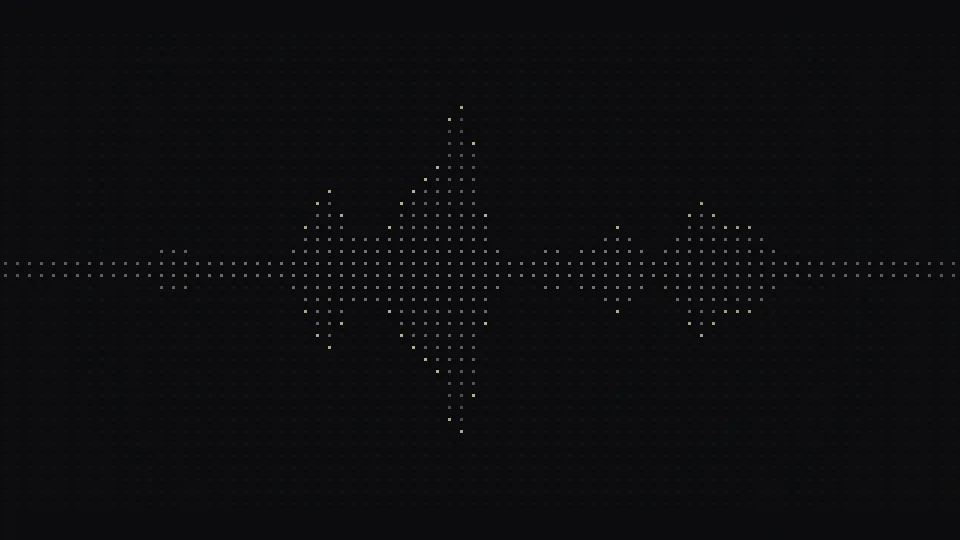

Synthia: real-time AI voice detection
[ PLACEHOLDER: what it detects, in plain language ]
A real-time detection pipeline with three layers: turn-taking dynamics (51 features), acoustic signal metrics (58 features) and an out-of-fold stacked ensemble of XGBoost and logistic regression.
Served from a containerized FastAPI endpoint on a Linux server, exposed through Cloudflare Tunnels for continuous uptime and live evaluation. [ PLACEHOLDER: your role on the team ]
Competition benchmarks
- ROC-AUC
- 1.000
- Balanced accuracy
- ~98.8%
- Avg. response latency
- 1.15 s
[ PLACEHOLDER: how these were evaluated: dataset, split, who ran it ]
- python
- linux
- cloudflare tunnels
- xgboost
- fastapi
- containers
[ PLACEHOLDER: demo or repo link ]